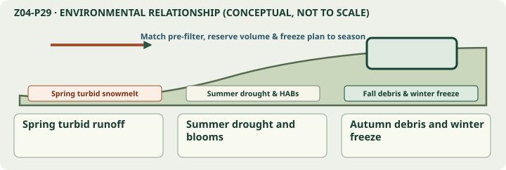

Z04-P29 · Water · New manuscript
Account for seasonal drought, low flow and warm-water bloom shifts
Adjust water-sourcing plans across spring snowmelt, summer low-water heat and autumn leaf-drop conditions.
When it applies · Multi-season Upper Midwest and North American backcountry planning and emergency water sourcing.
Equipment · Seasonal watershed forecast, topographic map, pre-filter cloth and multi-barrier treatment kit.

Actions
- Expect high turbidity, bank erosion and agricultural runoff during spring snowmelt and heavy rains, requiring pre-clarification and stricter chemical screening.[W25, W24, W22]
- Expect dried headwaters, warm stagnant pools and blue-green algal blooms during mid-to-late summer drought, requiring larger carried water reserves.[W15, W17, W14]
- Expect leaf tannins and organic debris clogging fine filters during autumn and frozen shallow creeks in late fall and winter.[W24, W28, ED]
Failure recognition · Planning an August or November water route using spring runoff expectations without pre-filters, freeze protection or enough carried water.[W24, W17, W28]
Verify · Match your carried capacity, pre-filter and treatment backup to the current season's water flow, temperature and bloom risk.[W26, W14, ED]
Stop or change course · When seasonal drought, blooms or freeze-up eliminate acceptable raw sources along the route, carry full potable reserves or reroute.[W15, W09, ED]
Evidence and editorial notes
- W09 · CDC · Water Treatment Options When Hiking, Camping, or Traveling (current web edition)
- Section: Overview and water treatment methods · Conditions: Hiking or camping where no safe source is confirmed
Support: Even clear water can contain germs. Assess the supply and carry safe water or an appropriate treatment method.
Limitations: Visual clarity never detects microbes or dissolved chemical contaminants. · Conflicting evidence: None across CDC/NPS/EPA sources.
Editorial note: Reinforces clarity-is-not-potability invariant across all Z04 cards. · Specialist reviewer: Drinking-water safety and public health
Primary source · checked 2026-11-24 - W14 · CDC · How to Create an Emergency Water Supply (current web edition)
- Section: How Much Water to Store; Rotation · Conditions: Household emergency water reserve planning
Support: Plan at least 1 gallon per person per day for at least 3 days (more for heat, illness, pregnancy, or pets); rotate self-filled water every 6 months.
Limitations: Backcountry active travel demands vary sharply by exertion, temperature, and humidity. · Conflicting evidence: None; household baseline is cited only as a planning floor, not a physiological maximum.
Editorial note: Distinguishes household storage floors from active field hydration demands. · Specialist reviewer: Household preparedness and drinking-water safety
Primary source · checked 2026-11-24 - W15 · CDC · Harmful Algal Bloom (HAB)-Associated Illness (current web edition)
- Section: Harmful Algal Blooms > Drinking Water and Exposure · Conditions: Surface water with discolored scum, mats, foul odor, or active HAB advisory
Support: Avoid contact and do not drink water from suspected harmful algal blooms; boiling does not destroy cyanotoxins and can concentrate them as water evaporates.
Limitations: Cyanotoxins can persist in visually clear water after a bloom dissipates. · Conflicting evidence: Contradicts naive boil-everything advice; CDC/EPA HAB warnings explicitly prohibit boiling HAB water.
Editorial note: Establishes HABs as a chemical-toxin rejection trigger, not a microbial boil target. · Specialist reviewer: Environmental health and drinking-water safety
Primary source · checked 2026-11-24 - W17 · Minnesota PCA · Blue-Green Algae and Harmful Algal Blooms (current web edition)
- Section: Blue-green algae and harmful algal blooms · Conditions: Minnesota lakes and ponds during warm summer and early autumn
Support: Blue-green algae blooms can form quickly along downwind shorelines; keep people and animals out of suspect water and use alternative drinking supplies.
Limitations: Local bloom distribution shifts rapidly with wind and wave action. · Conflicting evidence: None; reinforces regional Upper Midwest applicability.
Editorial note: Links downwind shoreline accumulation to site-selection and water-source rejection. · Specialist reviewer: Regional water quality and public health
Primary source · checked 2026-11-24 - W22 · US EPA · National Primary Drinking Water Regulations (current web edition)
- Section: National Primary Drinking Water Regulations · Conditions: Surface or groundwater near agriculture, industry, mines, roads, or old plumbing
Support: Regulated drinking-water hazards span inorganic chemicals (lead, arsenic, nitrate), organic solvents, pesticides, radionuclides, and microbes; microbial treatments do not remove dissolved inorganic or organic chemicals.
Limitations: Field observation cannot measure dissolved chemical concentration; laboratory testing is required. · Conflicting evidence: None; underpins strict chemical-rejection boundaries.
Editorial note: Explains why agricultural runoff, mine tailings, and road salt/fuel require source rejection. · Specialist reviewer: Environmental toxicology and drinking-water safety
Primary source · checked 2026-11-24 - W24 · USGS · Turbidity and Water (current web edition)
- Section: Turbidity and Water · Conditions: Cloudy, silt-laden, or storm-runoff streams and lakes
Support: Turbidity consists of suspended clay, silt, organic matter, and plankton that scatter light, shield pathogens from UV and disinfectants, and rapidly clog fine filter elements.
Limitations: Low turbidity does not establish biological or chemical safety. · Conflicting evidence: None; supports physical mechanism of pre-clarification.
Editorial note: Explains physical failure of filters and UV in turbid storm runoff. · Specialist reviewer: Hydrology and drinking-water treatment
Primary source · checked 2026-11-24 - W25 · USGS · Snowmelt Runoff and the Water Cycle (current web edition)
- Section: Snowmelt Runoff and the Water Cycle · Conditions: Late-winter and spring snowpack runoff and melting snow
Support: Snowpack accumulates airborne deposition and surface debris over winter and releases concentrated meltwater runoff during thaws, altering stream turbidity and flow rapidly.
Limitations: Clean-looking snow can still contain microbial or surface contaminants from deposition or wildlife. · Conflicting evidence: None; reinforces snow source screening and seasonal runoff shifts.
Editorial note: Supports seasonal snow/ice water cards and meltwater screening. · Specialist reviewer: Hydrology and cold-weather operations
Primary source · checked 2026-11-24 - W26 · NPS · Two Ways to Purify Water (current web edition)
- Section: Two Ways to Purify Water · Conditions: Backcountry water treatment planning in National Parks
Support: Boiling and chemical/filtration methods each have fuel, time, weight, and organism-coverage trade-offs; match the primary method and backup to route conditions and follow directions.
Limitations: Does not resolve chemical spills or algal toxins. · Conflicting evidence: Aligns with CDC-T altitude and parasite limits.
Editorial note: Supports primary-plus-backup water treatment selection in Z04. · Specialist reviewer: Backcountry water safety
Primary source · checked 2026-11-24 - W28 · CDC · Water Treatment Options When Hiking, Camping, or Traveling (current web edition)
- Section: Water Treatment Options > Freeze Damage and Maintenance · Conditions: Hollow-fiber and ceramic filters used in freezing or near-freezing temperatures
Support: Freezing water inside a wet filter element can crack hollow fibers or ceramic pores invisibly, allowing untreated water to bypass the barrier; keep wet filters above freezing or replace suspect elements.
Limitations: Internal crack failure often shows no visible external leak. · Conflicting evidence: None; critical cold-weather filter failure mechanism.
Editorial note: Drives cold-weather filter protection and failure-recognition cards. · Specialist reviewer: Drinking-water treatment and cold-weather operations
Primary source · checked 2026-11-24
Source lineage · USGS water cycle and Minnesota PCA HAB guidance; new manuscript · Classification · New manuscript.